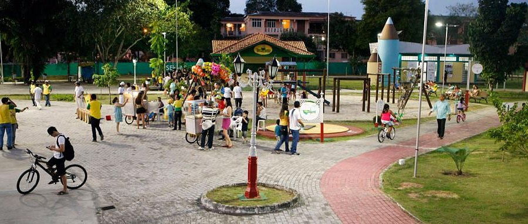

Junte-se ao Time de Voluntários AAM
Viva a emoção dos maiores eventos de corrida de rua de Manaus por dentro. Seu apoio é essencial para acolher milhares de atletas e celebrar o esporte amazônico.
Inscreva-se como VoluntárioPor que se voluntariar?
Experiência nos Bastidores
Atue diretamente na operação de grandes provas de rua em Manaus, desenvolvendo habilidades práticas em organização de eventos esportivos, liderança e trabalho em equipe.
Impacto Comunitário e Ambiental
Contribua para a promoção da saúde pública, inclusão através do esporte e ações de sustentabilidade e preservação nos principais parques e orlas da capital amazonense.
Certificado e Kit Oficial
Todos os voluntários recebem camiseta exclusiva do staff AAM, alimentação no dia do evento, credencial oficial e certificado de horas complementares reconhecido.
Onde sua ajuda faz a diferença
Da entrega de kits nos dias que antecedem a largada até o incentivo final nos últimos metros da prova, nossa equipe de voluntários é o coração de cada corrida realizada pela Associação Atlética Manaus.
Participe em uma ou mais de nossas quatro provas anuais: desde a festiva Corridinha da Comunidade (5K) no Parque dos Bilhares até o grande desafio da Maratona da Floresta (42K) na Ponta Negra.
Ver Funções Disponíveis
Funções e Áreas de Atuação
Hidratação e Apoio no Percurso
Distribuição de água mineral e isotônicos nos postos ao longo do trajeto, orientação de direção aos corredores e manutenção da limpeza sustentável da via. Requisito: Disposição e energia para incentivar os atletas.
Logística de Chegada e Medalhas
Recepção dos concluintes no funil de chegada, entrega das medalhas oficiais de participação, distribuição de frutas regionais e encaminhamento ao setor de recuperação. Requisito: Agilidade e espírito acolhedor.
Credenciamento e Entrega de Kits
Conferência de documentos dos inscritos, entrega de números de peito, chips de cronometragem e camisetas técnicas, além de atendimento no balcão de informações. Requisito: Boa comunicação e organização.
Formulário de Voluntariado
Preencha seus dados abaixo para integrar o time de voluntários nas próximas corridas de 2026. Nossa coordenação entrará em contato por e-mail e WhatsApp!